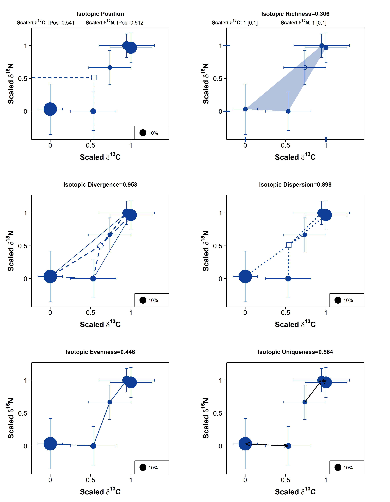
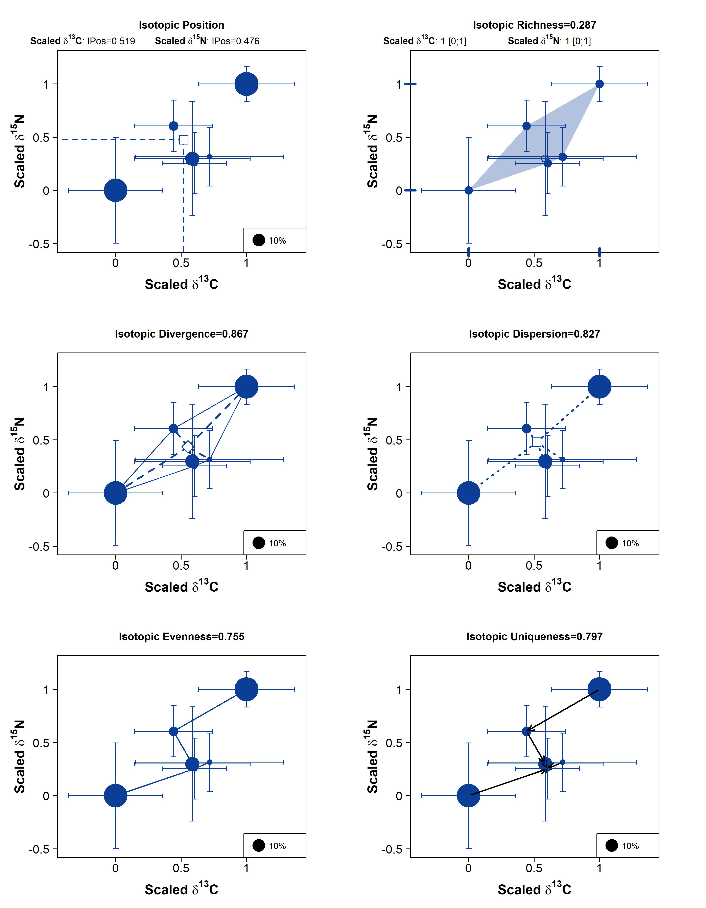
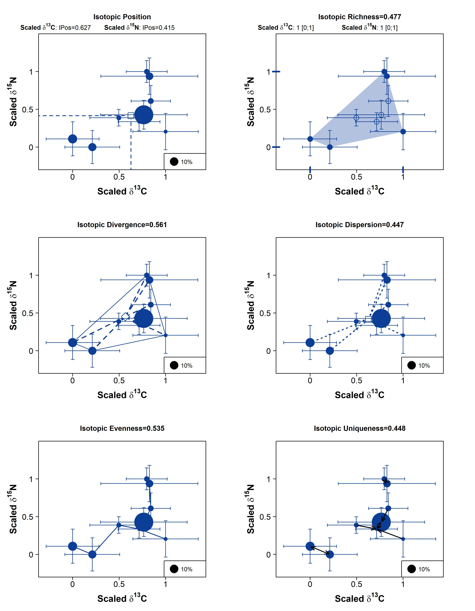
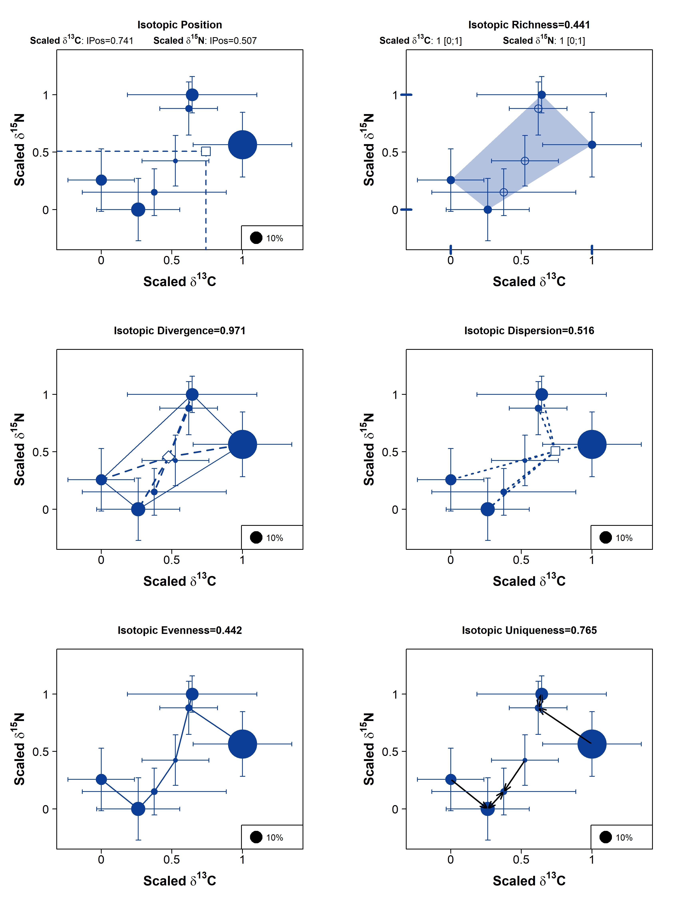

How does the trophic structure and competitive interactions within the meso-bathypelagic fish community of the Bay of Biscay evolve along the water column?
1- Isotopic diversity indices
How isotopic richness evolves with depth?
The species with the highest biomass have contrasting isotopic values to limit competition?
2- Focus on segregation/overlap of niches
At the community level, is there significant overlap of isotopic niches between species?
Is this overlap reduced when species are separated according to their sampling depth?
Is there more or less overlap between species belonging to the same family?
At the intraspecific level, does the position of the isotopic niche of a species change according to its sampling depth?
1. Representativeness of the sampling + baseline variation (krill)
Krill data
Significant variability of krill isotope signatures with depth?
Percentage of the diversity sampled by depth layer :
Epipelagic : 45%
Upper-mesopelagic: 33%
Lower-mesopelagic : 28%
Bathypelagic : 15%
Percentage of the biomass sampled by depth layer :
Epipelagic : 96%
Upper-mesopelagic: 90%
Lower-mesopelagic : 54% ( A.carbo 18%)
Bathypelagic : 60% ( A.carbo 10%)
2. Isotopic diversity index
Formatting of data and calculation of relative biomasses within each depth layer
Code
# Load data isotope_data_fish <- isotope_data %>%filter (species !="Meganyctiphanes_norvegica")# sourcing the R functions from 'si_div' R scriptsource("R/si_div.R")# Format indiviudal_siindividuals_si <- isotope_data_fish %>%select(individual_code, station, d13c, d15n, species_code) %>%rename(indiv_ID=individual_code,d13C= d13c,d15N =d15n,Species_code= species_code)%>%mutate(depth_layer =case_when(station %in%c("Z0508") ~"epipelagic", station %in%c("Z0492", "Z0512") ~"upper_mesopelagic", station %in%c("Z0503", "Z0518") ~"lower_mesopelagic", station %in%c("Z0524","Z0497") ~"bathypelagic"))%>%select(-station)%>%arrange(Species_code)# Format species_status_biomass with complete data of evhoe 2021# use of all EVHOE 2021 catch data to calculate relative biomasses (not just individuals sampled for isotope)catch_data_evhoe21 <- utils::read.csv(here::here("data","raw-data", "data_catch_2021_mesopelagic_sp_sampled.csv"), sep =";", header = T,dec =".")species_status_biomass <- catch_data_evhoe21%>%mutate(depth_layer =case_when(Code_Station %in%c("Z0508") ~"epipelagic", Code_Station %in%c("Z0492", "Z0512") ~"upper_mesopelagic", Code_Station %in%c("Z0503", "Z0518") ~"lower_mesopelagic", Code_Station %in%c("Z0524","Z0497") ~"bathypelagic"))%>%select(Code_Station, Tot_V_HV, Nom_Scientifique, depth_layer, Species_code, family)%>%distinct()%>%group_by(Nom_Scientifique, depth_layer)%>%mutate(biomass_sp=sum(Tot_V_HV))%>%select(-c(Code_Station, Tot_V_HV))%>%distinct()%>%group_by(depth_layer)%>%mutate(biomass_tot=sum(biomass_sp))%>%mutate(rel_Biomass=biomass_sp/biomass_tot*100)%>%select(-c(biomass_sp, biomass_tot))%>%rename(Species_name= Nom_Scientifique,Status=depth_layer,Order=family)%>%relocate(Status, .after=Order)%>%relocate(rel_Biomass, .after=Species_code)%>%arrange(Species_code)
Definitions:
Isotopic richness : increases when the space occupied by the species (convex hull) is large
Isotopic divergence : tends to 1 when all points (or their weights) are located at the edge of the convex hull, i.e. when the oragnisms with the most extreme isotopic values dominate the food web
Isotopic dispersion: equal to 1 when most points (or their weights) are far from the center of gravity of the point group, i.e. when organisms tend to have contrasting isotopic values
Isotopic evenness: tends to 1 when all organisms are equally distributed in isotopic space
Isotopic uniqueness: tends to 1 when most organisms (or their weights) are isolated in isotopic space, i.e. when most organisms (or those with the highest abundance) are isolated in isotopic space, their isotopic values are very different from the rest of the organisms
Calculation of indices within each depth layer
How to divide the depth layers? One station at 1000m and another at 1010, one of which is near the bottom: to be treated separately?
If percentage of sampled diversity low, use of isotopic diversity indices relevant? % biomass sampled within each depth layer is high (especially if A. carbo is excluded, and each most important species in terms of biomass have been sampled in each depth layer) and the indices are correlated to the biomass, so they remain relevant?
only the richness is not related to the biomass: to keep?
Epipelagic
station at 25m, 5 species sampled
Low isotopic richness, the species with the highest biomasses have contrasted isotopic values and these species dominate the food web at this depth in terms of biomass ( N. bolini and M. muelleri)
Code
# Epipelagic layer ----individuals_si_epipelagic <- individuals_si%>%filter(depth_layer=="epipelagic")%>%select(-depth_layer)status_biomass_epipelagic <- species_status_biomass%>%filter(Status=="epipelagic")# computing mean Stable Isotope values for each species# "group" column identical to species_code to fit with input format of function meanSI_group# no "weight" input as number of indivuals sampled per species did not mirror actual species biomassindividuals_si_ep<-data.frame(group=individuals_si_epipelagic[,"Species_code"], individuals_si_epipelagic)mean_si_species_ep<-meanSI_group(individuals_si_ep)# computing coefficent of variation within each species to assess intraspecific variabilitycbind(CV_d13C=mean_si_species_ep[,"sd_d13C"]/mean_si_species_ep[,"d13C"], CV_d15N=mean_si_species_ep[,"sd_d15N"]/mean_si_species_ep[,"d15N"] )
# -> intraspecific variability is overall low (<20%)# checking that species codes are the same in the two tables#row.names(mean_si_species)==status_biomass_epipelagic[,"Species_code"] # OK# building a single dataframe with all data for computing isotopic diversity indicesdata_fish_ep<-data.frame(mean_si_species_ep[,c("d13C","d15N", "sd_d13C","sd_d15N")], rel_Biomass=status_biomass_epipelagic[,"rel_Biomass"], Status=status_biomass_epipelagic[,"Status"], latin_name=status_biomass_epipelagic[,"Species_name"])# scaling mean stable isotopes values using function "scale_rge01"data_fish_scl_ep<-scaleSI_range01(data_fish_ep)# computing isotopic diversity of the whole fish assemblage using scaled isotopic values and species relative biomassID_scl_ab_ep<-IDiversity(cons=data_fish_scl_ep, weight=data_fish_scl_ep[,c("rel_Biomass")], nm_plot="epipelagic")# printing resultsresult <-as.data.frame(round(ID_scl_ab_ep,3)) knitr::kable(result)
round(ID_scl_ab_ep, 3)
min_d13C
0.000
min_d15N
0.000
max_d13C
1.000
max_d15N
1.000
range_d13C
1.000
range_d15N
1.000
IPos_d13C
0.541
IPos_d15N
0.512
IRic
0.306
IDiv
0.953
IDis
0.898
IEve
0.446
IUni
0.564

epipelagic
Upper-mesopelagic
2 stations : 370 & 555m, 6 species sampled
Low isotopic richness but species with the highest biomass ( N.kroyeri & X. copei) are located at the edge of the convex hull, with contrasting isotopic values. The species are rather evenly distributed and isolated in the isotopic space.
Code
# upper_mesopelagic layer ----individuals_si_upper_meso <- individuals_si%>%filter(depth_layer=="upper_mesopelagic")%>%select(-depth_layer)status_biomass_upper_meso <- species_status_biomass%>%filter(Status=="upper_mesopelagic")# computing mean Stable Isotope values for each species# "group" column identical to species_code to fit with input format of function meanSI_group# no "weight" input as number of indivuals sampled per species did not mirror actual species biomassindividuals_si_um<-data.frame(group=individuals_si_upper_meso[,"Species_code"], individuals_si_upper_meso)mean_si_species_um<-meanSI_group(individuals_si_um)# computing coefficent of variation within each species to assess intraspecific variabilitycbind(CV_d13C=mean_si_species_um[,"sd_d13C"]/mean_si_species_um[,"d13C"], CV_d15N=mean_si_species_um[,"sd_d15N"]/mean_si_species_um[,"d15N"] )
# -> intraspecific variability is overall low (<20%)# checking that species codes are the same in the two tables#row.names(mean_si_species_um)==status_biomass_upper_meso[,"Species_code"] # OK# building a single dataframe with all data for computing isotopic diversity indicesdata_fish_um <-data.frame(mean_si_species_um[,c("d13C","d15N", "sd_d13C","sd_d15N")], rel_Biomass=status_biomass_upper_meso[,"rel_Biomass"], Status=status_biomass_upper_meso[,"Status"], latin_name=status_biomass_upper_meso[,"Species_name"])# scaling mean stable isotopes values using function "scale_rge01"data_fish_scl_um<-scaleSI_range01(data_fish_um)# computing isotopic diversity of the whole fish assemblage using scaled isotopic values and species relative biomassID_scl_ab_um<-IDiversity(cons=data_fish_scl_um, weight=data_fish_scl_um[,c("rel_Biomass")], nm_plot="upper_mesopelagic")# printing resultsresult <-as.data.frame(round(ID_scl_ab_um,3)) knitr::kable(result)
round(ID_scl_ab_um, 3)
min_d13C
0.000
min_d15N
0.000
max_d13C
1.000
max_d15N
1.000
range_d13C
1.000
range_d15N
1.000
IPos_d13C
0.519
IPos_d15N
0.476
IRic
0.287
IDiv
0.867
IDis
0.827
IEve
0.755
IUni
0.797

upper_mesopelagic
Lower-mesopelagic
2 stations : 715 & 1000m, 9 species sampled
Isotopic richness slightly higher. In contrast, all other indices are rather low: the species with the largest biomasses (especially L.crocodilus) are located in the center of the isotopic space and do not have very contracted isotopic values. The species are not evenly distributed in the isotopic space.
Code
#Lower mesopelagic layer ----individuals_si_lower_meso <- individuals_si%>%filter(depth_layer=="lower_mesopelagic")%>%select(-depth_layer)status_biomass_lower_meso <- species_status_biomass%>%filter(Status=="lower_mesopelagic")# computing mean Stable Isotope values for each species# "group" column identical to species_code to fit with input format of function meanSI_group# no "weight" input as number of indivuals sampled per species did not mirror actual species biomassindividuals_si_lm<-data.frame(group=individuals_si_lower_meso[,"Species_code"], individuals_si_lower_meso)mean_si_species_lm<-meanSI_group(individuals_si_lm)# computing coefficent of variation within each species to assess intraspecific variabilitycbind(CV_d13C=mean_si_species_lm[,"sd_d13C"]/mean_si_species_lm[,"d13C"], CV_d15N=mean_si_species_lm[,"sd_d15N"]/mean_si_species_lm[,"d15N"] )
# -> intraspecific variability is overall low (<20%)# checking that species codes are the same in the two tables#row.names(mean_si_species_lm)==status_biomass_lower_meso[,"Species_code"] # OK# building a single dataframe with all data for computing isotopic diversity indicesdata_fish_lm <-data.frame(mean_si_species_lm[,c("d13C","d15N", "sd_d13C","sd_d15N")], rel_Biomass=status_biomass_lower_meso[,"rel_Biomass"], Status=status_biomass_lower_meso[,"Status"], latin_name=status_biomass_lower_meso[,"Species_name"])# scaling mean stable isotopes values using function "scale_rge01"data_fish_scl_lm<-scaleSI_range01(data_fish_lm)# computing isotopic diversity of the whole fish assemblage using scaled isotopic values and species relative biomassID_scl_ab_lm<-IDiversity(cons=data_fish_scl_lm, weight=data_fish_scl_lm[,c("rel_Biomass")], nm_plot="lower_mesopelagic")# printing resultsresult <-as.data.frame(round(ID_scl_ab_lm,3)) knitr::kable(result)
round(ID_scl_ab_lm, 3)
min_d13C
0.000
min_d15N
0.000
max_d13C
1.000
max_d15N
1.000
range_d13C
1.000
range_d15N
1.000
IPos_d13C
0.627
IPos_d15N
0.415
IRic
0.477
IDiv
0.561
IDis
0.447
IEve
0.535
IUni
0.448

lower_mesopelagic
Bathypelagic
2 stations : 1010 (close to the bottom) & 1335m, 7 species sampled
The species with the highest biomass, L.crocodilus, shows extreme isotopic values compared to the rest of the community (high divergence index and uniqueness)
Code
#Lower mesopelagic layer ----individuals_si_bathypelagic <- individuals_si%>%filter(depth_layer=="bathypelagic")%>%select(-depth_layer)status_biomass_bathypelagic <- species_status_biomass%>%filter(Status=="bathypelagic")# computing mean Stable Isotope values for each species# "group" column identical to species_code to fit with input format of function meanSI_group# no "weight" input as number of indivuals sampled per species did not mirror actual species biomassindividuals_si_b<-data.frame(group=individuals_si_bathypelagic[,"Species_code"], individuals_si_bathypelagic)mean_si_species_b<-meanSI_group(individuals_si_b)# computing coefficent of variation within each species to assess intraspecific variabilitycbind(CV_d13C=mean_si_species_b[,"sd_d13C"]/mean_si_species_b[,"d13C"], CV_d15N=mean_si_species_b[,"sd_d15N"]/mean_si_species_b[,"d15N"] )
# -> intraspecific variability is overall low (<20%)# checking that species codes are the same in the two tables#row.names(mean_si_species_b)==status_biomass_bathypelagic[,"Species_code"] # OK# building a single dataframe with all data for computing isotopic diversity indicesdata_fish_b <-data.frame(mean_si_species_b[,c("d13C","d15N", "sd_d13C","sd_d15N")], rel_Biomass=status_biomass_bathypelagic[,"rel_Biomass"], Status=status_biomass_bathypelagic[,"Status"], latin_name=status_biomass_bathypelagic[,"Species_name"])# scaling mean stable isotopes values using function "scale_rge01"data_fish_scl_b<-scaleSI_range01(data_fish_b)# computing isotopic diversity of the whole fish assemblage using scaled isotopic values and species relative biomassID_scl_ab_b<-IDiversity(cons=data_fish_scl_b, weight=data_fish_scl_b[,c("rel_Biomass")], nm_plot="bathypelagic")# printing resultsresult <-as.data.frame(round(ID_scl_ab_lm,3)) knitr::kable(result)
round(ID_scl_ab_lm, 3)
min_d13C
0.000
min_d15N
0.000
max_d13C
1.000
max_d15N
1.000
range_d13C
1.000
range_d15N
1.000
IPos_d13C
0.627
IPos_d15N
0.415
IRic
0.477
IDiv
0.561
IDis
0.447
IEve
0.535
IUni
0.448

bathypelagic
Evolution of trophic diversity indices with depth
The lower mesopelagic layer stands out with low indices for all measurements (except richness). Within this layer the species with the highest biomass (especially L.crocodilus) are located near the centre of the convex hull with relatively similar isotopic values (no species with rare isotopic values). It is also the depth layer with the highest number of species sampled.
Within the other stations the divergence is high, i.e. the species that dominate the food web in terms of biomass have extreme isotopic values.
The upper mesopelagic layer also stands out with high values for all indices. It has the highest uniqueness and evenness values, which means that the species with the largest biomass are isolated in the isotopic space but also that the species are equally distributed. Indeed, the two species with the highest biomass ( X.copei, N.kroyeri) are located on opposite sides of the isotopic space.
# # Dimension reduction using PCA# res.pca <- prcomp(df, scale = TRUE)# # Coordinates of individuals# ind.coord <- as.data.frame(factoextra::get_pca_ind(res.pca)$coord)# # Add clusters obtained using the K-means algorithm# ind.coord$cluster <- factor(res.km$cluster)# # Add Species groups from the original data sett# ind.coord$Species <- df$Species# # Data inspection# head(ind.coord)# # # Percentage of variance explained by dimensions# eigenvalue <- round(factoextra::get_eigenvalue(res.pca), 1)# variance.percent <- eigenvalue$variance.percent# head(eigenvalue)